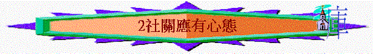

一
.社關的原因「
什麼原因使死海成為死的？因為它總是在接受，卻從來不付出。為何許多基督徒那麼冷淡？因為他們總是接受，卻從來不給予。」?曾盛泉、若石《慕迪喻道故事》1.因神是我們的神
「不可摘盡葡萄園的果子，也不可拾取葡萄園所掉的果子；要留給窮人和寄居的。我是耶和華你─們的 神。」利19:10
2.因窮人是神所造
「戲笑窮人的，是辱沒造他的主；幸災樂禍的，必不免受罰。」箴17:5
「富戶窮人在世相遇，都為耶和華所造。」箴22:2
3.是尊榮神的表現
「欺壓貧寒的，是辱沒造他的主；憐憫窮乏的，乃是尊敬主。」箴14:31
4.因我們曾經困苦
「你摘葡萄園的葡萄，所剩下的，不可再摘；要留給寄居的與孤兒寡婦。你也要記念你在埃及地作過奴僕，所以我吩咐你這樣行。」申24:21-22
5
.是最大的誡命「他回答說：「你要盡心、盡性、盡力、盡意愛主你的神；又要愛鄰舍如同自己。」」路10:27
6
.可得神所賜福氣A.地上的福氣
「你們若說：『這第七年我們不耕種，也不收藏土產，吃甚麼呢？』我必在第六年將我所命的福賜給你們，地便生三年的土產。第八年，你們要耕種，也要吃陳糧，等到第九年出產收來的時候，你們還吃陳糧。」利25:20-22
「你若留意聽從耶和華你神的話，謹守遵行我今日所吩咐你這一切的命令，就必在你們中間沒有窮人了（在耶和華你神所賜你為業的地上，耶和華必大大賜福與你。）」申15:4
「少種的少收，多種的多收」，這話是真的。」林後9:6
B.天上的福氣
「耶穌說：「你若願意作完全人，可去變賣你所有的，分給窮人，就必有財寶在天上；你還要來跟從我。」」太19:21
7
.因是神所悅之祭「只是不可忘記行善和捐輸的事，因為這樣的祭是 神所喜悅的。」來13:16
8
.令人越發感謝神「叫你們凡事富足，可以多多施捨，就藉著我們使感謝歸於神。因為辦這供給的事，不但補聖徒的缺乏，而且叫許多人越發感謝神。他們從這供給的事上得了憑據，知道你們承認基督順服他的福音，多多的捐錢給他們和眾人，便將榮耀歸與神。」林後9:11-13
9
.達至真實的虔誠「在 神我們的父面前，那清潔沒有玷污的虔誠，就是看顧在患難中的孤兒寡婦，並且保守自己不沾染世俗。」雅 1:27
二
.社關的對象「地在安息年所出的，要給你和你的僕人、婢女、雇工人，並寄居的外人當食物。」利25:6
「「你在田間收割莊稼，若忘下一捆，不可回去再取，要留給寄居的與孤兒寡婦。這樣，耶和華你神必在你手裡所辦的一切事上賜福與你。」申24:19
「因為馬其頓和亞該亞人樂意湊出捐項給耶路撒冷聖徒中的窮人。」羅15:26
1.經濟上
----貧窮的2.地位上
----較低的：如雇工、僕人、婢女3.際遇上
----困苦的：孤兒、寡婦、有病的4.種族上
----寄居的
三
.全人的關懷「現在世上有無數的人需要我們去同情安慰，物質的説明固然需要，更重要是心靈上的體恤，尤其有些還陷在罪惡火坑中的人，更需要有人把福音的好處帶給他們。」──《為甚麼要用比喻》
1.心
A.不塞住憐恤的心
「在耶和華你神所賜你的地上，無論哪一座城裡，你弟兄中若有一個窮人，你不可忍著心、揝著手不幫補你窮乏的弟兄。」申15:7
「
凡有世上財物的，看見弟兄窮乏，卻塞住憐恤的心，愛 神的心怎能存在他裏面呢？」約一 3:17B.動了憐憫人之心
「
上前用油和酒倒在他的傷處，包裹好了，扶他騎上自己的牲口，帶到店裏去照應他。惟有一個撒馬利亞人行路來到那裏，看見他就動了慈心，」路10:33-34C
.有愛人如己之心「他回答說：「你要盡心、盡性、盡力、盡意愛主你的神；又要愛鄰舍如同自己。」」路10:27
D
.要樂意付出之心「各人要隨本心所酌定的，不要作難，不要勉強，因為捐得樂意的人是神所喜愛的。」林後9:7
E.時常存謙卑的心
「心裡謙卑與窮乏人來往，強如將擄物與驕傲人同分。」箴16:19
2.眼
A.不佯而不見
「賙濟貧窮的，不至缺乏；佯為不見的，必多受咒詛。」箴28:27
B.不藐視他們
「藐視鄰舍的，這人有罪；憐憫貧窮的，這人有福。」箴14:2
C
.不以貎取人「若有一個人帶著金戒指，穿著華美衣服，進你們的會堂去；又有一個窮人穿著骯髒衣服也進去；你們就看重那穿華美衣服的人，說：「請坐在這好位上」；又對那窮人說：「你站在那裡」，或「坐在我腳凳下邊。」這豈不是你們偏心待人，用惡意斷定人嗎？我親愛的弟兄們，請聽，神豈不是揀選了世上的貧窮人，叫他們在信上富足，並承受他所應許給那些愛他之人的國嗎？你們反倒羞辱貧窮人。那富足人豈不是欺壓你們，拉你們到公堂去嗎？他們不是褻瀆你們所敬奉（所敬奉：或作被稱）的尊名嗎？」雅2:2-7
D
.充滿慈善的「眼目慈善的，就必蒙福，因他將食物分給窮人。」箴22:9
「在倫敦的東角，有一禮拜堂，一晚聚會之後，一位年輕醫生，正在熄燈關門，看見一個小孩匿於堂內。原來他是無家可歸，要求在堂內過夜。年輕的醫生就帶他回家，詳問來歷，始知與他遭遇相同的尚有13人。他們都在一個煤炭倉裏過夜。年輕的醫生就與那位小孩，同去煤炭倉，看見他們都睡得很熟。有一個還緊緊抱住他四歲的小弟弟。他們除了一些破毯子以外，沒有其他禦寒之物。醫生於是得著啟示，知道神所要他作的事。他就開始為無家可歸的孩童設立一個家庭。當這位醫生去世之時，報上登載：伯納醫生（(Dr. Bernards）一生照顧孩童達八萬人，其中多數成為真實的基督徒幷有用的國民。」 ---http://www.ccbiblestudy.org/Topics/95Preach/95GT06.htm
4.口
----不戲笑窮人「戲笑窮人的，是辱沒造他的主；幸災樂禍的，必不免受罰。」箴17:5
5.手
----要鬆開「在耶和華你神所賜你的地上，無論哪一座城裡，你弟兄中若有一個窮人，你不可忍著心、揝著手不幫補你窮乏的弟兄。」申15:7
「原來那地上的窮人永不斷絕；所以我吩咐你說：『總要向你地上困苦窮乏的弟兄鬆開手。」申15:11
6.腳
----與他們交往「心裡謙卑與窮乏人來往，強如將擄物與驕傲人同分。」箴16:19
個案討論
巴基斯坦卡拉奇的Orangi Town貧民窟，亞洲最大的貧民窟，沒人知道裏面到底住了多少人，但外界猜測或有240萬。
起初這個貧民窟是沒有任何衛生設施的，而當地居民也沒有耐心等政府來修，所以自己動手進行了修建。
這裏沒水沒電，污水隨處都能找到，房屋更是破爛不堪，在加上自然災害，在這裏生存只有去尋找被別人一起了的垃圾。
若今天你有機會參與一些外國交流團，去到Orangi Town貧民窟參觀，你會存什麼心態參與？ 你應留意什麼事情？